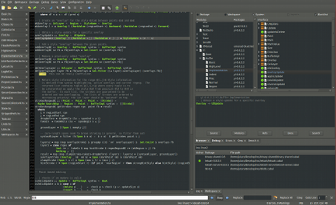

Leksah

Leksah is the Haskell IDE of choice. It is written in Haskell, uses Gtk, and runs on Linux, Windows and Mac OS X. Leksah is a practical tool to support the Haskell development process. It requires the Glasgow Haskell Compiler (GHC).
Leksah is completely free and distributed under the Gnu General Public License 2.0

Leksah may be worth trying because:
- It uses the cabal package format and incorporates a cabal file editor
- It offers Workspaces for complex project with multiple packages with automatic build of dependencies
- It contains a module browser that allows you to find type information
about all the functions/symbols available in the packages installed on your system
- For most packages it shows as well haddock style comments, and give direct navigation to sources
- It integrates ghci debugging (including continuous recompilation) that allows you to type
check and evaluate highlighted code snippets from within the editor itself. Includes a scratch buffer for testing ideas
- It includes an helper for automatic addition of import statements
- Offers a Haskell customised editor with "source candy"
- Multi-window support for a multi head setting
- Many standard features of IDEs like: Jump to errors, Auto Completion, Grep integration, ...
- Configurable with session support, keymaps and flexible appearance
|